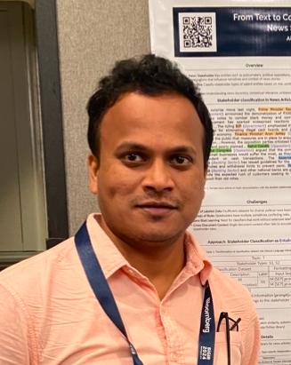

Assistant Professor, IIITDM Kurnool
NLP | Machine Learning | LLMs | Generative AI
Download CVI am currently an Assistant Professor in the Department of Computer Science and Engineering at IIITDM Kurnool (joined January 2026). Previously, I worked as a Research Scientist at IIT Delhi focusing on LLM evaluation methods for reasoning and climate data analytics.
I completed my Ph.D. from IIT Kharagpur in Natural Language Processing, focusing on news analysis, event extraction, sentiment analysis, and media bias understanding.
Looking for PhD students for July 2026 session.
Email: alapan.cse@gmail.com
Email: alapan.cse@iiitk.ac.in